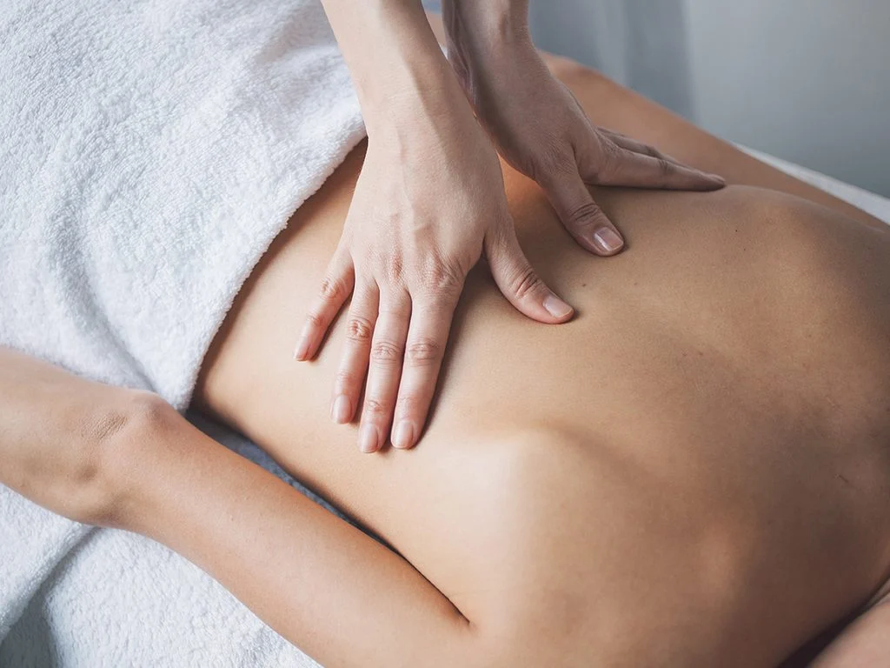

Upper Back
The upper back is the area between the base of the neck and the bottom of the ribcage. There are 12 bones that make up the upper back, which doctors call the thoracic spine. The first bone of the upper back begins at the base of the neck, and the 12th bone ends just below the ribcage. Upper back pain can appear anywhere between these bones.
Featured Exercise
Wide angle forward bend


- Sit in Dandasana (Staff Pose), sitting directly on top of your sitting bones.
- Open your legs out to the sides as wide as you are able. Flex your feet and point the toes up.
- Press through your big toe mounds and root down with your femurs so the quadriceps are also facing the ceiling.
- Inhale and lengthen your spine; exhale and hinge at your hips, walking your hands forward and bringing your torso to the floor between your legs.
- Keep the back straight and avoid curving the spine.
- To exit the pose, walk your hands back and return to Staff Pose.
Featured Yoga
Cat Cow Yoga


- Begin on your hands and knees in table pose, with a neutral spine. As you inhale and move into cow pose, lift your sit bones upward, press your chest forward and allow your belly to sink.
- Lift your head, relax your shoulders away from your ears, and gaze straight ahead.
- As you exhale, come into cat pose while rounding your spine outward, tucking in your tailbone, and drawing your pubic bone forward.
- Release your head toward the floor — just don’t force your chin to your chest. Most importantly, just relax.
Home Remedy
Back Massage

- Put a small amount of warm lotion or oil on your hands. Rub your hands together so the lotion is spread evenly on your hands.
- Move your hands slowly during the massage to help the person relax.
- Start massaging the back at the lower back. Move your hands upward on both sides of the spine all the way to the shoulders.
- Make a circular motion as you move your hands upward. Press a bit more firmly with your thumbs as you make the circles.
- Move across the shoulders and start moving down the upper arms. Use less pressure as you move downward.
- Ask if you are applying too much or too little pressure as you massage. Ask the person to tell you if he feels pain in any area. Do not massage a painful area, or massage it very gently.
- Apply more lotion on your hands as needed.